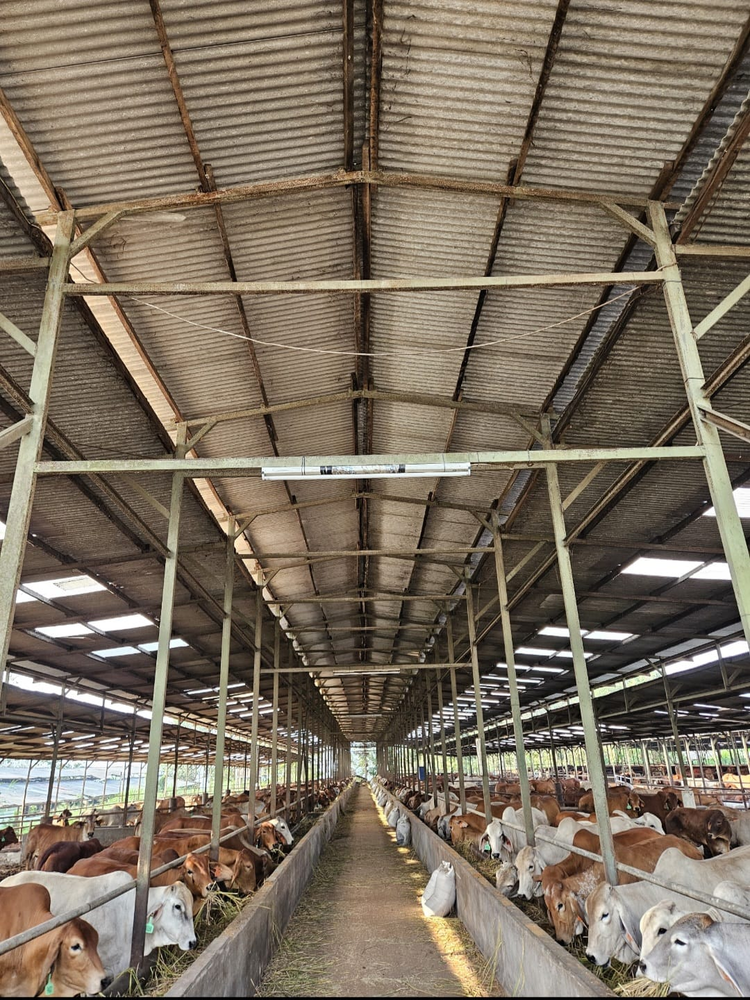
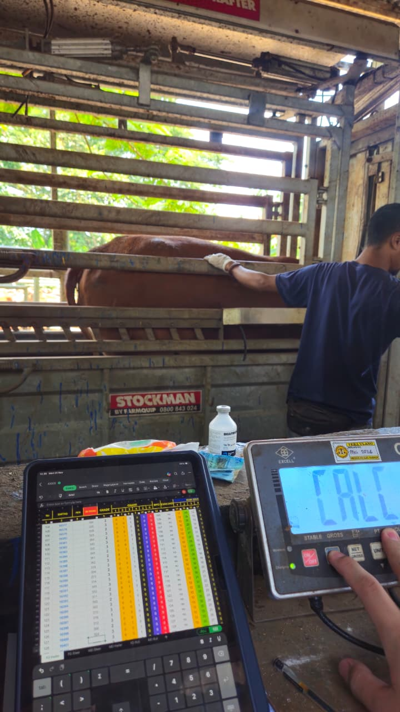
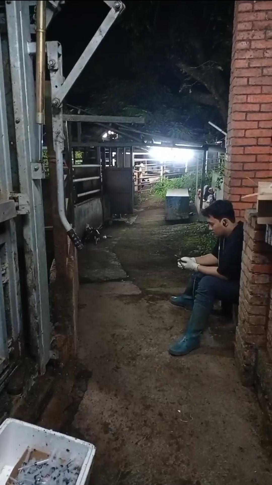
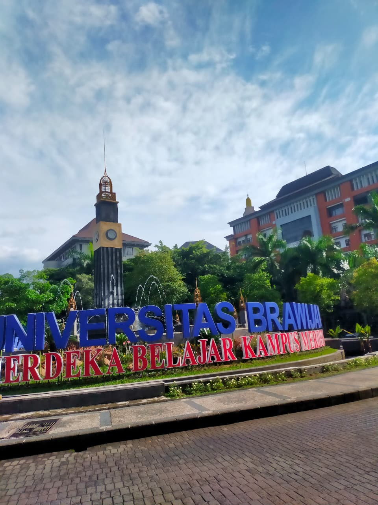
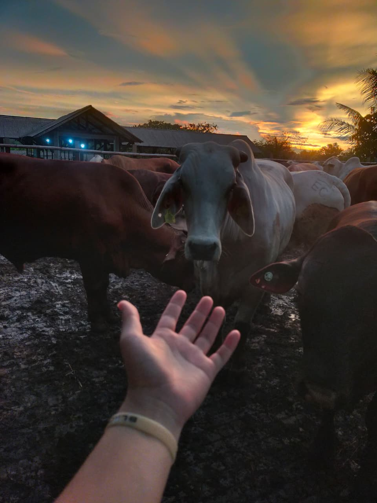

Operasional Harian Feedlot
Mengawasi ritme feeding, rutinitas kandang, kesiapan ternak, dan eksekusi performa harian.
Mengawal eksekusi operasional feedlot harian dengan fokus pada kesiapan ternak, monitoring kesehatan, konsistensi pakan, animal welfare, biosecurity, dan disiplin kerja lapangan pada lingkungan operasional berskala besar.
Mengawasi ritme feeding, rutinitas kandang, kesiapan ternak, dan eksekusi performa harian.
Memantau indikator kesehatan, perilaku ternak, dan koordinasi respons lapangan secara cepat dan terstruktur.
Mendukung konsistensi pakan, kontrol alokasi, ketepatan delivery, dan disiplin nutrisi harian.
Menjaga kebersihan area, pencegahan penyakit, alur lalu lintas kandang, dan integritas lingkungan operasional.
Mendorong low-stress handling, perlakuan ternak yang humanis, dan rutinitas kerja berbasis welfare.
Mengkoordinasikan tim, prioritas lapangan, komunikasi kerja, dan ritme pelaksanaan agar operasional stabil.
Portfolio ini dirancang untuk menunjukkan kapasitas lapangan, standar kerja, dokumentasi, dan arah karier dalam industri feedlot secara lebih kredibel daripada CV online biasa.
Feedlot Supervisor dengan pengalaman dalam pengawasan operasional unit, monitoring kondisi ternak, kontrol kualitas pakan, penerapan animal welfare, dan biosecurity. Terbiasa menjaga ritme kerja lapangan, disiplin pelaksanaan, serta konsistensi SOP untuk mendukung stabilitas unit dan kesiapan ternak.
Empat prinsip ini menjadi dasar dalam menjaga kualitas pelaksanaan, keselamatan kerja, kepercayaan, dan konsistensi hasil di lapangan.
Area ini memperjelas jenis kontribusi yang paling relevan untuk kebutuhan operasional feedlot dan livestock production.
Dokumentasi terpilih menampilkan lingkungan feedlot, keterlibatan lapangan, grading, handling, video proses, serta fondasi akademik secara lebih profesional dan relevan.






Bagian ini menekankan skala unit, tanggung jawab, dan relevansi pengalaman terhadap kebutuhan feedlot modern.
Mengawasi eksekusi operasional harian pada unit feedlot ±6.000 ekor, mencakup rutinitas pakan, monitoring kondisi ternak, disiplin lapangan, animal welfare, biosecurity, koordinasi tim, dan perbaikan operasional.
Mendukung dan mengawasi aktivitas feedlot harian, termasuk feeding routine, monitoring ternak, pencatatan data, sanitasi, fasilitas, handling, dan pelaksanaan SOP di lingkungan operasional ±1.500 ekor.
Mengikuti rutinitas feedlot, distribusi pakan, observasi kesehatan ternak, sanitasi, penanganan ternak, dan pembelajaran disiplin operasional lapangan.
Terbuka untuk peluang profesional, komunikasi rekrutmen, dan diskusi yang relevan dengan operasional feedlot, livestock supervision, animal welfare, biosecurity, dan pengembangan karier di industri peternakan.